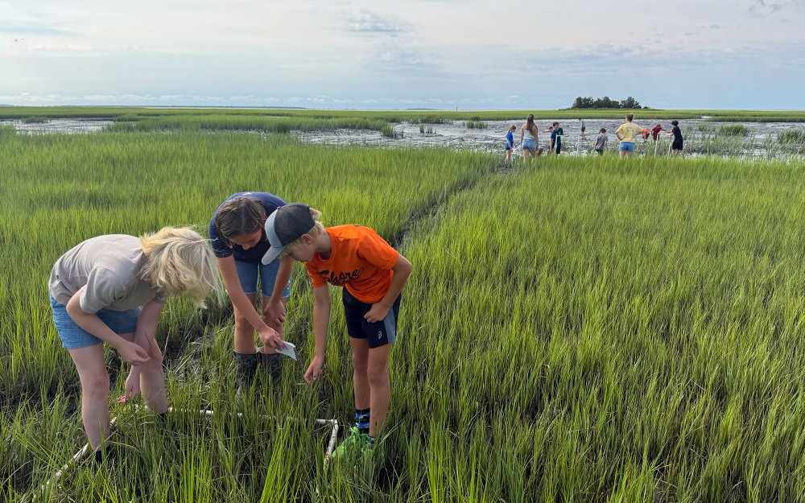

The VIMS.edu Alt Text Quiz
Good alt text makes images work for everyone. Test your instincts on real examples from the VIMS.edu website.
How this works
You’ll see 10 real images from the VIMS.edu website, each shown in the context where it appears. For each one, pick the alt text you think works best. After you answer, we’ll explain why. You can go back at any time to revisit your answers.
This quiz is rooted in guidance from established accessibility resources, but this is an evolving field and some answers are debatable. Questions or disagreements are welcome — email jwcaterine@vims.edu.

New to alt text? Read this first (optional)
Alt text (alternative text) is a short written description of an image. Screen readers read it aloud to people who can’t see the image, and it appears if the image fails to load.
The one question above does most of the work. What follows from it:
-
If there is no key takeaway — the image is purely decorative — the alt text can be left empty.
Decorative means purely aesthetic: background textures, borders, dividers,
generic stock graphics, and icons whose meaning is already carried by a
nearby heading or label.
For Cascade users
Cascade requires alt text to be entered as the “Display Name,” so marking an image as decorative is not always an option.
- Be concise. Convey the meaning, not every detail. Skip “image of” / “photo of” — screen readers already say it’s an image. Do name the image type when the type is itself information: a map, a chart, or a scientific illustration.
-
A caption is not necessarily the same as alt text. A caption is visible page text,
and it’s a good place for names, photo credit, and context. Alt text is the
description a screen reader gets. Often it’s a good idea to provide both, but keep in mind a
screen-reader user may hear both.
For Cascade users
Cascade is the exception: the “Image description” you set when inserting an image fills the caption and the alt text both, so they will match. Write one line that works as both.
- Charts & maps need more. A short summary of the takeaway — and when it’s feasible, the underlying data offered another way: an accessible table, paragraph, or download.
Alt text quiz